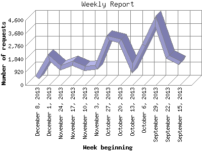

The Weekly Report identifies the activity for each week within the report
time frame. Remember that one page hit can result in several server requests
as the images for each page are loaded.
Note: Depending on the
report time frame for this report the first and last week may not represent
a full seven day week, resulting in lower hits.

| Week beginning | Number of requests | Number of page requests | |
|---|---|---|---|
| 1. | September 15, 2013 | 1,587 | 109 |
| 2. | September 22, 2013 | 2,030 | 91 |
| 3. | September 29, 2013 | 4,541 | 95 |
| 4. | October 6, 2013 | 2,840 | 79 |
| 5. | October 13, 2013 | 1,184 | 88 |
| 6. | October 20, 2013 | 3,144 | 85 |
| 7. | October 27, 2013 | 3,355 | 75 |
| 8. | November 3, 2013 | 1,240 | 77 |
| 9. | November 10, 2013 | 1,168 | 79 |
| 10. | November 17, 2013 | 1,558 | 89 |
| 11. | November 24, 2013 | 1,233 | 71 |
| 12. | December 1, 2013 | 1,939 | 83 |
| 13. | December 8, 2013 | 531 | 45 |
Most active week beginning September 15, 2013 : 109 pages sent. 4,541 requests handled.
Weekly average: 82 pages sent. 2,026 requests handled.
This report was generated on December 12, 2013 02:03.
Report time frame September 16, 2013 00:20 to December 11, 2013 21:56.
| Web statistics report produced by: analog 6.0 / Report Magic 2.21 |